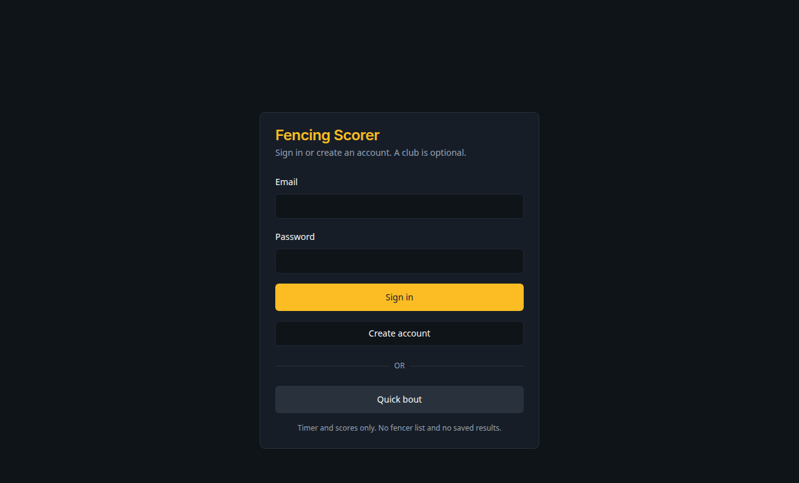
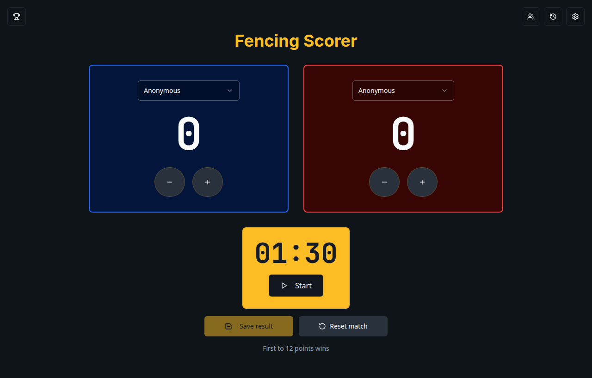
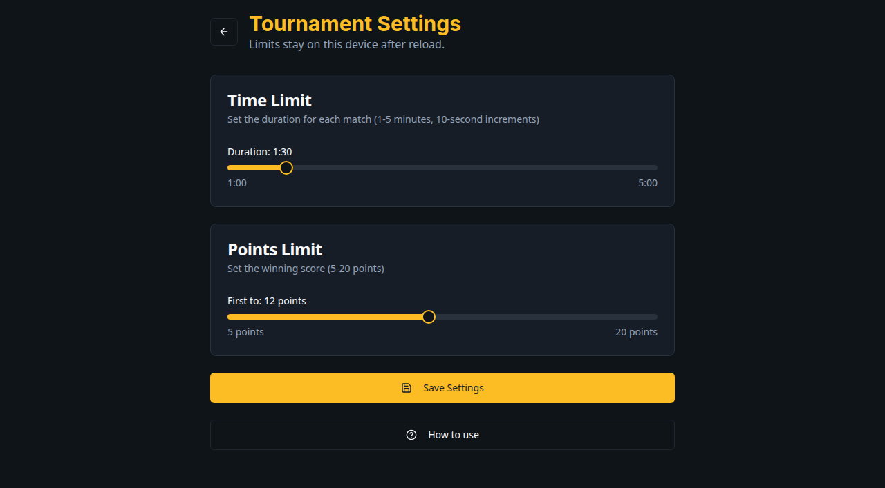
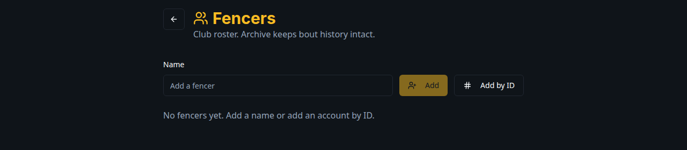
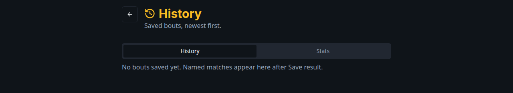
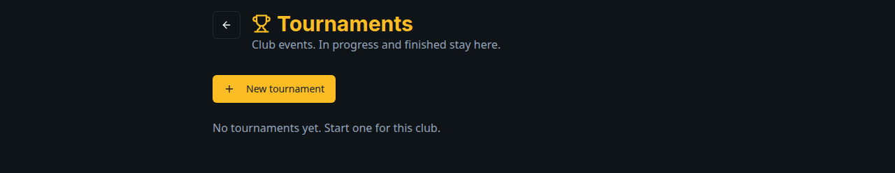

Round robin
Все со всеми. Удобно для небольшой группы.
Это судейское табло для клубных боёв. Счёт и время идут на телефоне или планшете. Кнопки в приложении на английском — ниже они написаны так, как вы их видите на экране.
На первом экране три пути:

После регистрации приложение спросит имя. Клуб создавать не обязательно: Create club — вы становитесь владельцем и попадаете в список клуба; Skip — открывается табло, клуб можно завести позже в Account.
Без клуба табло работает, но результаты не сохраняются, а разделы людей, турниров и истории закрыты.
Слева — синяя сторона, справа — красная. По центру — время боя.

Кнопки + и − работают до старта, на паузе и после конца времени. Если кто-то первым набрал лимит уколов, под табло появляется имя победителя, и таймер больше не запускается — пока вы не поправите счёт или не сбросите бой.
После первого старта имена на этот бой фиксируются. Чтобы сменить пару, удержите Reset match.
Шестерёнка справа вверху ведёт в настройки. Иконки людей, кубка и часов — в список клуба, турниры и историю. Они видны, когда вы в клубе.
Здесь задаются лимиты обычного клубного боя на этом телефоне или компьютере: время от 1 до 5 минут и уколы от 5 до 20. Нажмите Save Settings — настройки останутся после обновления страницы.

Кнопка How to use открывает эту страницу. Если вы вошли в аккаунт, ниже будет Account.
У турнира свои ползунки времени и уколов на карточке события. Они не зависят от этих настроек.
В Account видно:
Раздел Fencers — кто состоит в клубе.

Имя у человека с аккаунтом меняется только в его Account, не карандашом в списке.
В History попадают только сохранённые клубные бои с табло, не турнирные. Новые сверху. Можно отфильтровать по человеку.

Вкладка Stats — победы, поражения и с кем чаще фехтовали. Турнирные протоколы сюда не входят: их смотрите на карточке турнира.
Турнир — это один клубный вечер на одной дорожке: отметить людей, выбрать формат, провести бои, посмотреть таблицу.

Все со всеми. Удобно для небольшой группы.
Сетка на выбывание. Нужно ровно 2, 4, 8, 16 или 32 человека. Ничью сохранить нельзя — нужен победитель.
Сначала круговые группы, потом сетка. Число групп и сколько выходят выбираете сами.
Туры по текущим результатам. Число туров считается само.
Царь горы: победитель остаётся, к нему выходит следующий. Жеребьёвки нет — пару выбираете на табло.